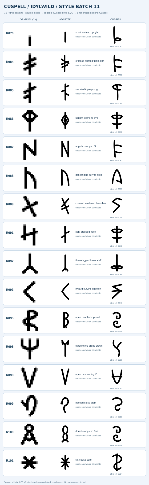

16 Runic glyph stylization candidates. No canonical adoption.
Original source artwork pixels at left, editable Cuspell-style vector in middle, unchanged canonical Cuspell SVG at right. No meaning assignments.

All original CC0 sources retained, current 150 canonical glyphs untouched.